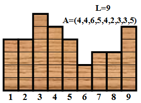
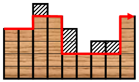
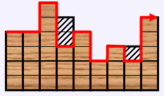

King 从小就酷爱艺术，他梦想成为一名伟大的艺术家。最近他得到了一块材质不错的木板，木板下侧为直线段，长为 $L$，平均分为 $L$ 段，从左到右编号为 $1，2，……，L$。木板的上侧是锯齿形，高度为整数，第i段的高度为 $A_i$，$A_i \ge 2$。（如下所示）

这么好的一段材料浪费了怪可惜的，King 决定好好加工一番做成一件艺术品。但他不是纯艺术家，他觉得每一件作品都应该有实用价值（否则只是华而不实），具有实用性的艺术品是他设计的理念。根据这块木板的锯齿状，King 想到了每天起床后都要用到的一件日用品，“对，就把它做成梳子！” 他的设想是：用刻刀将某些上端的格子挖掉（如果把某个格子挖掉，那么这个格子上方的格子也必须被挖掉，但不能把一列中的格子全都挖掉），使得剩下木板构成 “规则锯齿形”（这样才好梳头）。

例如，对于上图，挖掉第 $3$，$7$，$8$ 列最上面 $1$ 个格子，第 $5$ 列最上面 $2$ 个格子后，剩下的区域就构成 “规则锯齿形”（如右图）。一个锯齿形称为 “规则锯齿形” 当且仅当它的上边界（图中红色曲线所示）的拐弯序列不包含 "010" 或者 "101"。图中红色曲线的拐弯序列为："011001"，（其中 $0$ 代表往左拐，$1$ 代表往右拐）沿着曲线的最左端往右走，先左拐，再右拐，接着右拐，然后左拐，继续左拐，最后右拐。为了最大限度的减少浪费，King 希望做出来的梳子面积最大。这样一来，设计梳子的任务就变得非常复杂了——不过这是对于艺术家来说，对于你来说，不就是小菜一碟吗？
第一行为整数 $L$，其中 $4 \le L \le 100000$，表示木板下侧直线段的长。
第二行为 $L$ 个正整数 $A_1,A_2,…,A_L$
仅包含一个整数 $D$，表示为使梳子面积最大，需要从木板上挖掉的格子数。
9 4 4 6 5 4 2 3 3 5
3

 Comet OJ
Comet OJ